Uydu Görüntüleri
İTÜ Ayazağa Ortofoto
Bing Maps Aerial (Varsayılan Altlık)
Bing Maps Aerial with Labels
Bing Maps Road
Bing Maps Labels Only
Sentinel-2
Çift Altlık Görüntüle
Dijital Arazi Modelleri
İTÜ Ayazağa DTM
Cesium World Terrain (Varsayılan Altlık)
CORINE Arazi Kullanımı
Yapay Bölgeler
1. Yapay Bölgeler
1.1. Şehir Yapısı
1.2. Endüstri, Ticaret ve Ulaşım Birimleri
1.3. Maden Ocağı, Boşaltım ve İnşaat Sahaları
1.4. Yapay, Tarımsal Olmayan Yeşil Alanlar
1.1.1. Sürekli Şehir Yapısı
1.1.2. Kesikli/Süreksiz Şehir Yapısı
1.2.1. Endüstriyel Ve Ticari Birimler
1.2.2. Karayolları, Demiryolları ve İlgili Alanlar
1.2.3. Limanlar
1.2.4. Havaalanları
1.3.1. Maden Çıkarım Sahaları
1.3.2. Boşaltım Sahaları
1.3.3. İnşaat Sahaları
1.4.1. Yeşil Şehir Alanları
1.4.2. Spor ve Eğlence Alanları
Tarımsal Alanlar
2. Tarımsal Alanlar
2.1. Ekilebilir Alan
2.2. Sürekli Ürünler
2.3. Meralar
2.4. Karışık Tarımsal Alanlar
2.1.1. Sulanmayan Ekilebilir Alan
2.1.2. Sürekli Sulanan Alanlar
2.1.3. Pirinç Tarlaları
2.2.1. Üzüm Bağları
2.2.2. Meyve Bahçeleri
2.2.3. Zeytinlikler
2.3.1. Mera Alanları
2.4.1. Sürekli Ürünlerle Birlikte Bulunan Senelik Ürünler
2.4.2. Karışık Tarım Alanları
2.4.3. Doğal Bitki Örtüsü ile Birlikte Bulunan Tarım Alanları
2.4.4. Ormanla Karışık Tarım Alanları
Orman ve Yarı Doğal Alanlar
3. Orman ve Yarı Doğal Alanlar
3.1. Ormanlar
3.2. Maki ve Otsu Bitkiler
3.3. Bitki Örtüsü ile Kaplı Olmayan veya Az Miktarda Bitki Örtüsü İle Kaplı Açık Alanlar
3.1.1. Geniş Yapraklı Ormanlar
3.1.2. İğne Yapraklı Ormanlar
3.1.3. Karışık Ormanlar
3.2.1. Doğal Çayırlıklar
3.2.2. Fundalıklar
3.2.3. Sklerofil Bitki Örtüsü
3.2.4. Bitki Değişim Alanları
3.3.1. Sahiller, Kumsallar ve Kumluklar
3.3.2. Çıplak Kayalıklar
3.3.3. Seyrek Bitki Alanları
3.3.4. Yanmış Alanlar
3.3.5. Buzul ve Kalıcı Kar
Sulak Alanlar
4. Sulak Alanlar
4.1. Karasal Bataklıklar
4.2. Denize Yakın Islak Alanlar
4.1.1. Karasal Bataklıklar
4.1.2. Turbalıklar
4.2.1. Tuz Bataklığı
4.2.2. Tuzlalar
4.2.3. Gelgit Olayı İle Oluşan Düzlükler
Su Yapıları
5. Su Yapıları
5.1. Karasal/İç Sular
5.2. Deniz Suları
5.1.1. Su Yolları
5.1.2. Su Kütleleri
5.2.1. Kıyı Lagünleri
5.2.2. Nehir Ağızları, Deltalar
5.2.3. Deniz ve Okyanus
3D Yapı Katmanı
Cesium OSM Buildings
Fakülteler
Derslik Binaları
Yemekhaneler
Yeme-İçme Alanları
Giriş Kapıları
Öğrenci Yurtları
Teknokent Binaları
Dini Yapılar
İnşaat Süreci Tamamlanmamış Yapılar
Müzeler
Ofis/İşyeri
Resmi Binalar
Sağlık Birimleri
Teknik Yapılar
Entegre Dijital İkizi Tamamlanmış Binalar
Ulaşım Ağı
Ana Arter
Araç Yolu
Yaya Yolu
Paylaşımlı Yol
Bisiklet Yolu
Altyapı Ağı
Atık Su
Doğalgaz
Fiber Kablo
Elektrik Kablo
İçme Suyu
Isıtma
Sulama
Yağmur Suyu
POI’ler
Üst Yapı
Ring Durakları
Reklam Panoları
Ağaçlar
Baz İstasyonları
Heykeller
ATM’ler
Marketler
Kafeler
Restoranlar
Kırtasiyeler
Güvenlik Kameraları
Alt Yapı
Rögar Kapakları
Kadastro
Kadastral Bilgiler
Ada Numaraları
Parsel Numaraları
Parsel Sınırları
Yapı Türüne Göre Sınıflandırma
Kamu Yapıları
Özel Yapılar
Diğer Yapılar
Özel Durumlarına Göre Sınıflandırma
Spor Alanları
Ortak Kullanım Alanları
Eğitim Amaçlı Kullanım Alanları
Araç Trafiğine Kapalı Kullanım Alanları
Analiz Araçlarımız
Tampon Bölge Oluşturma Araçları
Nokta Tampon Analizi
Çizgi Tampon Analizi
Poligon Tampon Analizi
Görünürlük Analiz Araçları
Görüş Alanı Analizi
Görüş Hattı Analizi
Örtüşme Analiz Araçları
Fark Araçları
Kesişim Aracı
Birleştirme Aracı
Kesme Aracı
Topoğrafik Analiz Araçları
Kazı/Dolgu Analizi
Eğim Analizi
Bakı Analizi
Enkesit/Boykesit Aracı
Çizim/Hesap Araçlarımız
Çizim Araçlarımız
Nokta Oluştur
Çizgi Oluştur
Hesap Araçlarımız
Poligon Açısı Hesapla
Açıklık Açısı Hesapla
Poligon/Alan Bazlı Araçlarımız
Poligon Oluştur
Voronoi Bölgesi Oluştur
Üçgenleme Bölgesi Oluştur
Daire Oluştur
Çember Oluştur
Uygulama Kullanım Modu:
Aydınlık
Karanlık
Nokta Koordinat Tercihi:
Kartezyen
Coğrafi
Coğrafi
Kartezyen

